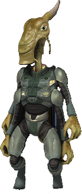

Все началось с изобретением технологии межпространственного пузыря.
Это устройство разрывало ткань вселенной и позволяло путешествовать
на любые расстояния за считанные минуты используя пузырь вокруг корабля
чтобы попасть в разрыв гиперпространства. С развитием этой технологии
стало понятно что гиперпространство по которому передвигались корабли
населенно неким подобием паразитов или иммунной системе гиперпространства,
Элиары называли их Эсуриты за безмерный голод.
Огромные трещины в пространстве и времени разделили всю галактику, она сжалась в одну точку и растянулась в миллиарды раз больше и в итоге лопнула разбившись на миллионы осколков в гиперпространстве. Планеты и звезды имеющие достаточную гравитацию уцелели и стали цепью хаотично разбросанных объектов в скоплении.
Огромные трещины в пространстве и времени разделили всю галактику, она сжалась в одну точку и растянулась в миллиарды раз больше и в итоге лопнула разбившись на миллионы осколков в гиперпространстве. Планеты и звезды имеющие достаточную гравитацию уцелели и стали цепью хаотично разбросанных объектов в скоплении.
